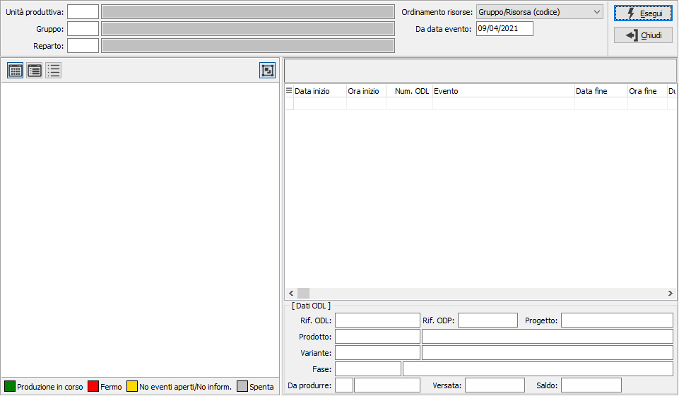
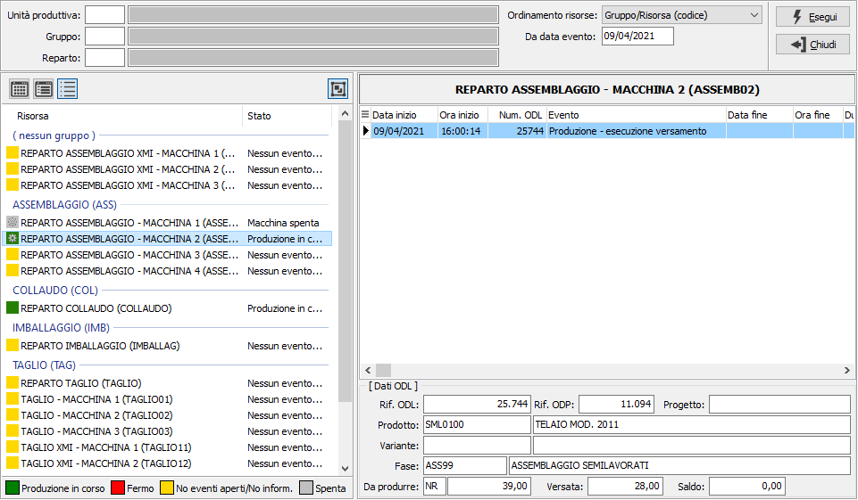

Analisi stato risorse
La funzione consente di analizzare gli eventi delle risorse che possono essere selezionati per unità produttiva, gruppo e reparto (i campi possono anche essere lasciati vuoti; è possibile modificare, tramite il parametro "Ordinamento risorse" in quale formato mostrare le risorse nel box di sinistra (per gruppo/sequenza, gruppo/risorsa ordinati per codice o descrizione o reparto/risorsa ordinati per codice o descrizione); per ogni risorsa è possibile mostrare gli eventi nel box di destra a partire dalla data inserita a video. Se attivo il collegamento con EMachina e la risorsa è collegata ad una macchina sarà identificata da un'immagine diversa e lo stato effettivamente quello che in quel momento risulta dalla macchina collegata.

Effettuando la selezione vengono mostrati i risultati; nel box di destra le risorse con il relativo stato (libera, in produzione, ferma); tramite i pulsanti posti sopra il box è possibile modificare il metodo di visualizzazione. Nel box di destra, per ogni risorsa, vengono mostrati gli eventi a partire dalla data richiesta a video.
